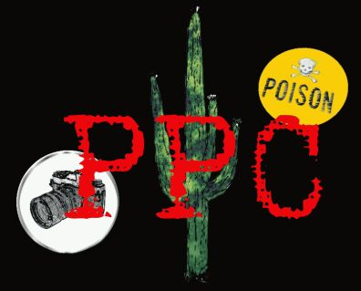
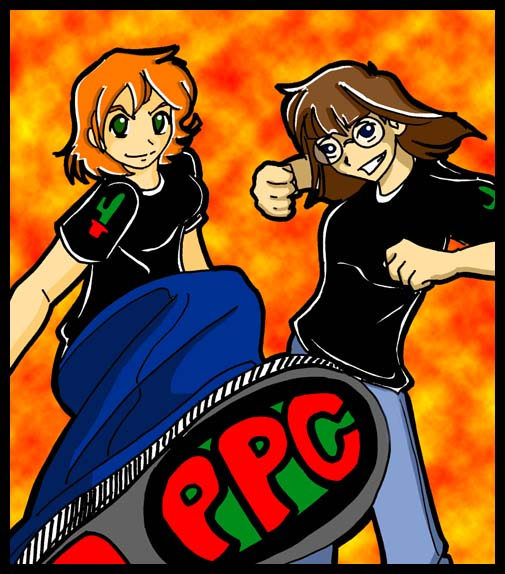

Introduction
"Do not meddle in the affairs of Assassins, for we are heavily-armed and quick to anger. And not noticeably subtle."
 {kind=link}
{kind=link}
THE AUTHORESSES' NOTE
We love fanfic. Honestly, we do.
But changing the main plotline of the canon story is ridiculous. (Except in speculative AU "what-if" type stories.) And Mary Sues upstage the canonical main characters, which really should not happen. If you want to be the main character, try doing original fiction. Then you can even publish it without breaking copyright laws, maybe even get rich. But if you do that, please knock your character down a few notches from "angel."
Each fanfic Jay and Acacia enter has its own chapter. The author and fic title are included in the chapter's title.
Critiques go to Acacia (amy8girl@hotmail.com), because Jay (sonra_jihad@hotmail.com) suffers from an inability to deal with criticism. (even good criticism). Flames go to anyone you like, because they'll just be laughed at anyway.

Editor's Notes
Here, for the first time, all 26 stories of the Original Series are collected for your viewing pleasure.
With the blessing of the PPC Board, I have given the series a very light editing treatment in order to clean up little things like two-dot ellipses, too-many-dot ellipses, missing commas, punctuation outside quotes, misspellings, etc. (Sorry, Britpickers—Jay and Acacia are American as far as I know, so American usage rules apply.) Words in *asterisks* have been made bold where they are used for emphasis. Where they stand for actions (or it's specifically stated that someone spoke them), they've been left alone. "Makes-Things" seems to be hyphenated more often than not, so it's been hyphenated across the board. Internal consistency is my aim overall.
Jay and Acacia weren't in the habit of distinguishing badfic quotes from their own text like most of us do now, and that's how I've left it. It's usually easy to spot the difference anyway, since the badfic quotes are bad—I haven't attempted to clean them up. Rule of thumb: when in doubt, keep reading. There's usually clarification ahead.
Some stories have two tag lines. In those cases, the first is from Odd Lots, and the second is Miss Cam's.
Missions
- Mission 1 - "Rambling Band"
- Meet the Assassins as they rid Middle-earth of stray punk rockers in Rivendell.
- Mission 2 - "Chosen"
- Galadriel's other daughter meets a timely end.
- Mission 3 - "Lady of the Fellowship"
- Technical difficulties are experienced, and necessity proves the mother of invention as the Assassins encounter a Warrior-Sue.
- Mission 4 - "Protector of the Ringbearer"
- Of blue unicorns and less probable things; the Department of Bad Slash proves helpful.
- Mission 5 - "What Might Have Been"
- The secret of Rivendell's construction and the lost technology of Hollin—cement.
- Mission 6 - "And in the Darkness Bind Them"
- Zelda meets Dragonlance meets the Assassins: PPC 1, "Link" 0.
- Mission 7 - "Children of the Earth"
- Sean and Lux tag along. Recruiting.
- Mission 8 - "Why am I Here"
- How to drive a Mary Sue to madness: the Cheese Elves of Rivendell.
- Mission 9 - "Laugh at the Moon"
- Scientific "Testing to Destruction" of a Mary Sue.
- Mission 10 - "Vacation at OFUM"
- (Which turns out to be a Working Vacation, of course...)
- Mission 11 - "Mithril"
- Elrond's other daughter meets a timely end in Generic Fantasyland.
- Mission 12 - "Gwendolyn"
- In which it is seen that ten is not a logical number.
- Mission 13 - "All Souls Night"
- What to do with flames, and no-win situations.
- Mission 14 - "Sisterhood"
- "Nine Sues for mortal men, doomed to cry..."
- Mission 15 - "The Maiden"
- Barbecue time! Party with the PPC!
- Mission 16 - "We Cannot Be"
- Andromielle Zinnia, Sue Social Status, and OOCness...
- Mission 17 - "Darkness Awakened"
- Administrative chaos, er, changes to the departments...
- A transfer, a lichen that sounds like John Cleese, and reincarnated Isildur—"Izzy"—teaming up with a Jedi named Matrix—it's time to take on crossovers.
- Mission 18 - "Two Worlds"
- Surreal crossovers, or, Very Large Stone Buildings in Lothlórien.
- The prodigal daughter of Remus Lupin and Galadriel gets what's coming to her.
- Mission 19 - "Torment"
- The Assassins widen their horizons to the deserving.
- "You don't have to be crazy to work here, but it helps." —Especially when dealing with a case where the canon characters are totally out of their minds. Oh, the pain...
- Mission 20 - "The Luggage Runs Off With The One Ring"
- Discworld crossover mayhem—say goodbye to sanity...
- Mission 21 - "The Dark Elf"
- Bring your anti-nausea medications...
- Mission 22 - "Elemental Crystals"
- Dragons, dragons, & more uncanonical dragons!
- On dragons and real dragons.
- Mission 23 - "To Know Where You Are Going"
- Elrond and Arwen. The love story never told. For a bloody good reason, as Jay and Acacia... explain to the Possession-Sue.
- Mission 24 - "A Taste of Blood"
- Death to Leggy-torturers!
- Poor Legolas has finally had it, and kills himself (who can blame him?), making Jay team up with Dee of the RPF Department to give the author a good whacking.
- Mission 25 - "Broken Doll"
- Neurotic supermodels don't belong in Rivendell.
- Jay gets a new partner, a Sue gets a new appreciation for battleaxes.
- Mission 26 - "No Way Back"
- The sad story of Candie the sk8er girl and her demise.
The Protectors of the Plot Continuum was created by Jay and Acacia. The works archived here belong to their authors. The Celtic knot dividers and buttons are freeware from Aon Celtic Art. Various free stock images are used with permission from artists at deviantART.com.
PPC: The Lost Tales is the brainchild of Neshomeh and the work of Neshomeh and helpers, including at various times Twiggy, Hushpiper, Tawaki, Irish Samurai, Hieronymus Graubart, and Omega.